Coding Standards
Readable, maintainable code · 18 slides · 26 practice questions
Read each original slide, then use the explanation and example to make the idea easier to remember. Review the cheat sheet at the end, then take the quiz.
Open or download the complete lesson PDF
Jump to a slide
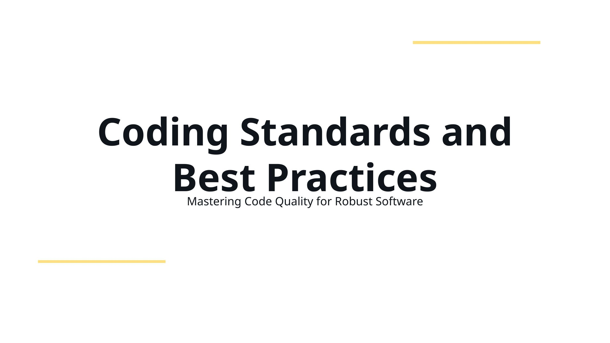
This lesson focuses on habits and shared rules that make code easier to read, change, and maintain.
Example: A teammate should be able to understand a function without needing its author beside them.
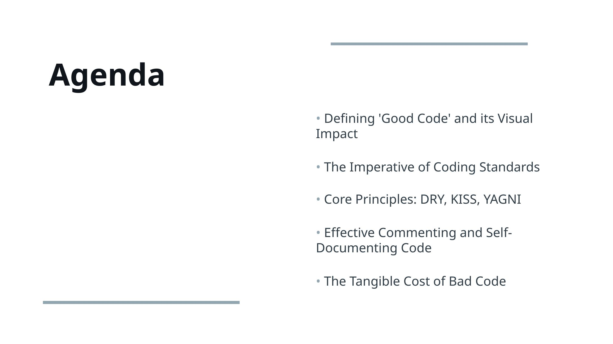
The agenda moves from recognizing readable code to standards, clean-code principles, comments, and the costs of poor code.
Example: It provides a route from daily coding choices to their longer-term effects.
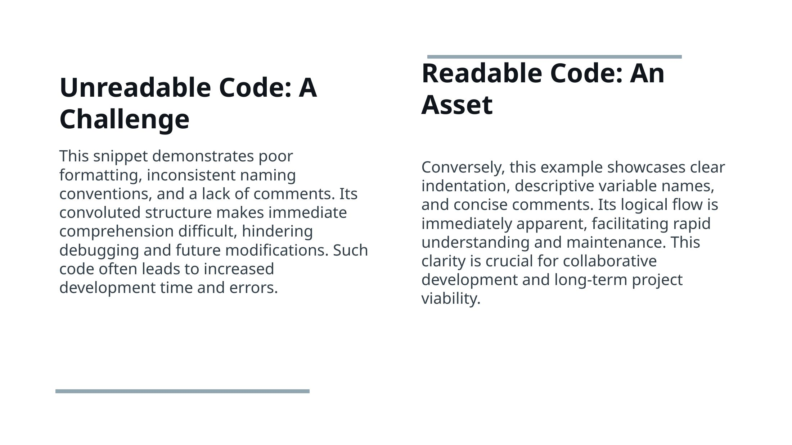
Readable code uses clear formatting, meaningful names, and a logical structure. Hard-to-read code takes longer to debug and modify, while clear code helps a team work together.
Example: A variable named total_price and a clearly indented calculation are easier to follow than x and a dense line of code.
- Readable code: Code with consistent formatting, descriptive names, and clear flow that is easier to understand and maintain.
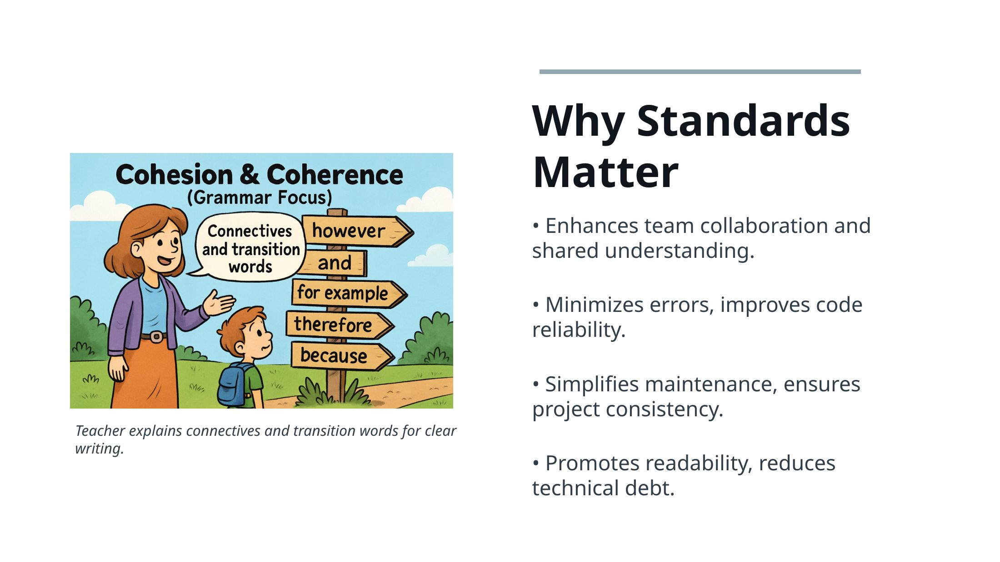
Standards give teammates a shared way to write code. Consistency supports collaboration, reduces avoidable mistakes, and makes maintenance easier.
Example: When everyone formats functions the same way, code reviews can focus on behavior instead of spacing.
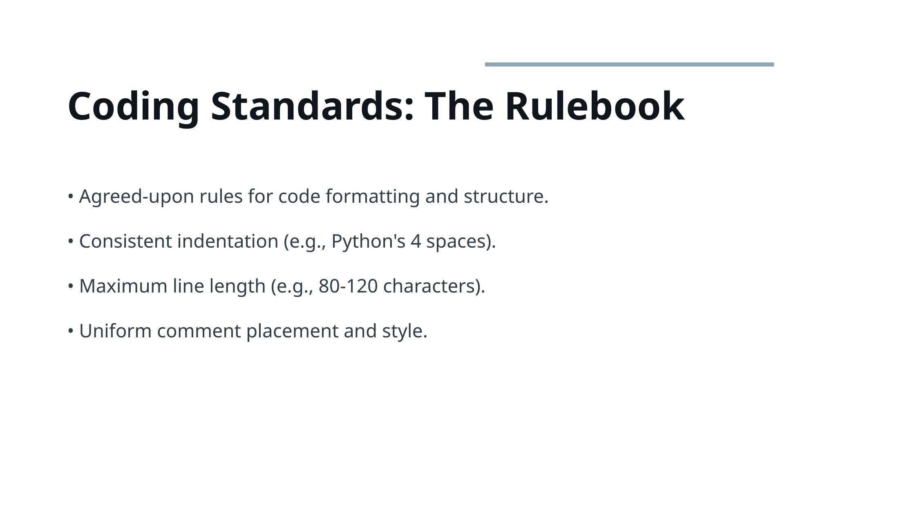
Coding standards are agreed rules for style and structure, such as indentation, line length, and comment formatting. They make a project feel consistent.
Example: A team might agree to use four spaces for indentation and keep lines within a chosen length.
- Coding standards: Agreed rules for code formatting and structure, including indentation, line length, and comment style.
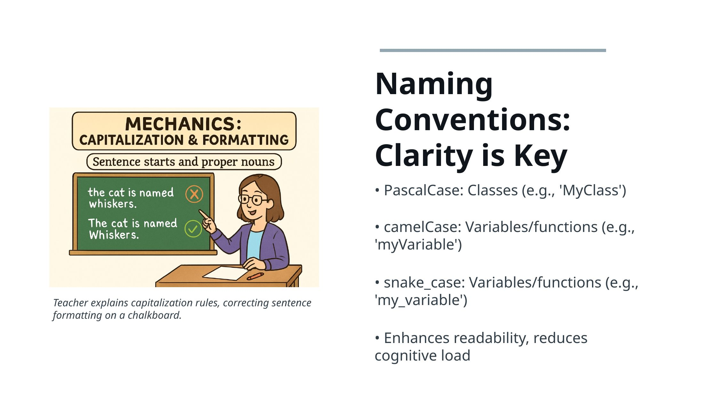
Naming conventions use predictable capitalization patterns so readers can recognize kinds of names. PascalCase, camelCase, and snake_case are common styles.
Example: MyClass uses PascalCase, myVariable uses camelCase, and my_variable uses snake_case.
- PascalCase: A naming form exemplified by MyClass, used for classes in the lesson.
- camelCase: A naming form exemplified by myVariable, used for variables or functions in the lesson.
- snake_case: A naming form using lowercase words separated by underscores, such as my_variable.
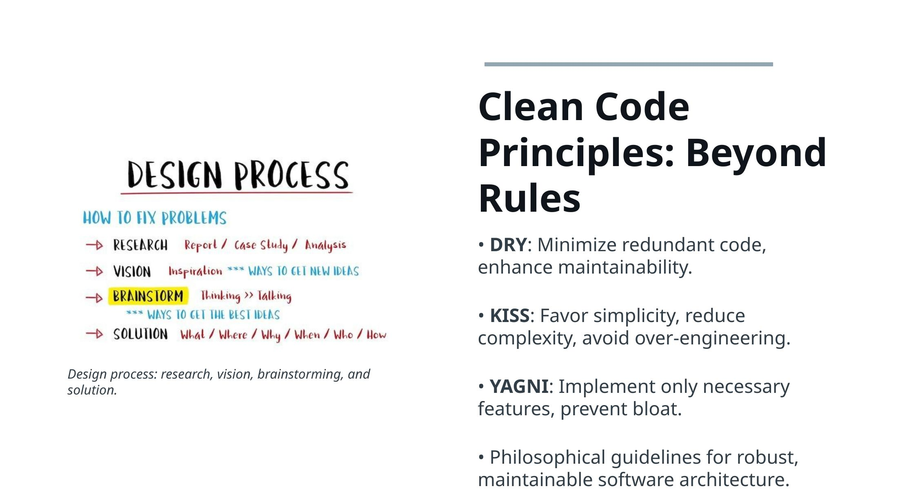
DRY reduces repeated logic, KISS favors a simple solution, and YAGNI avoids features that are not needed yet. These are practical guides for keeping software maintainable.
Example: For a small required calculation, write one clear reusable function instead of duplicating it or building speculative options.
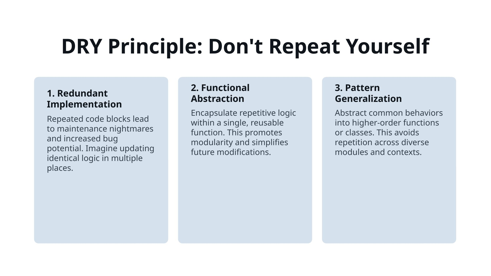
Repeated code creates multiple places to update and can lead to inconsistent fixes. Put shared behavior in one reusable function or abstraction.
Example: If several screens format dates the same way, use one shared formatter so a change is made once.
- DRY: Don't Repeat Yourself: minimize duplicated logic by consolidating shared behavior into reusable abstractions.
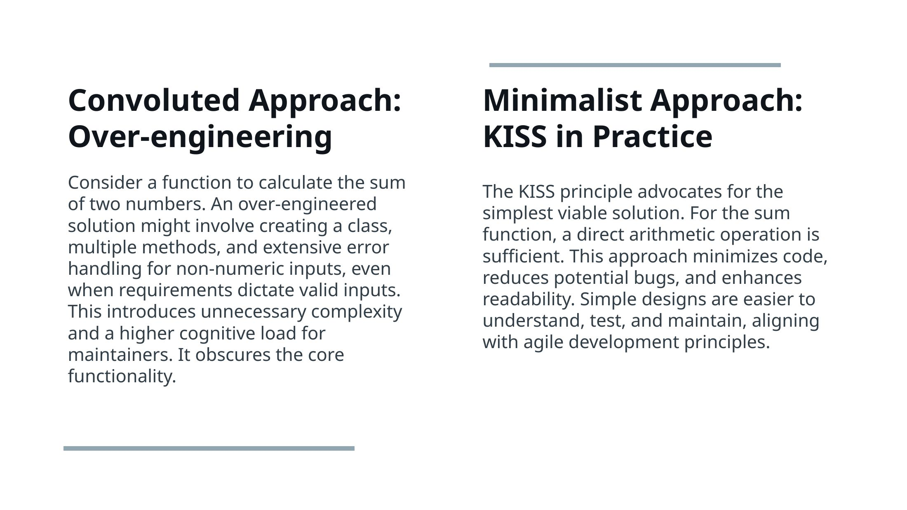
KISS means choosing the simplest solution that meets the requirements. Extra classes and layers can obscure a task that needs only a direct calculation.
Example: For adding two valid numbers, a simple addition function is easier to understand than a framework of helper objects.
- KISS: Favor the simplest viable solution and avoid unnecessary complexity or over-engineering.
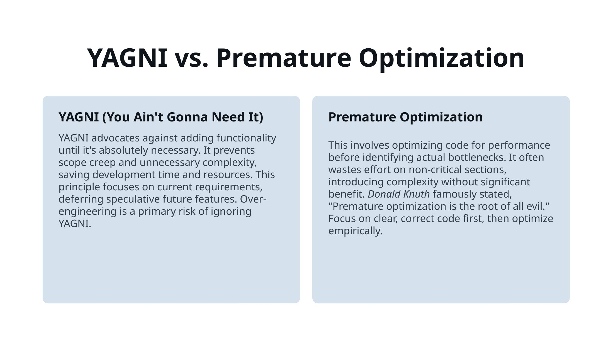
YAGNI says to defer features until they are actually needed. Premature optimization is tuning performance before evidence shows where the bottleneck is. Both can add complexity without current benefit.
Example: Build the needed report first; measure its speed before rewriting parts for performance.
- YAGNI: You Ain't Gonna Need It: implement functionality when required instead of building speculative features.
- Premature optimization: Performance tuning before actual bottlenecks are identified, potentially adding complexity without useful benefit.
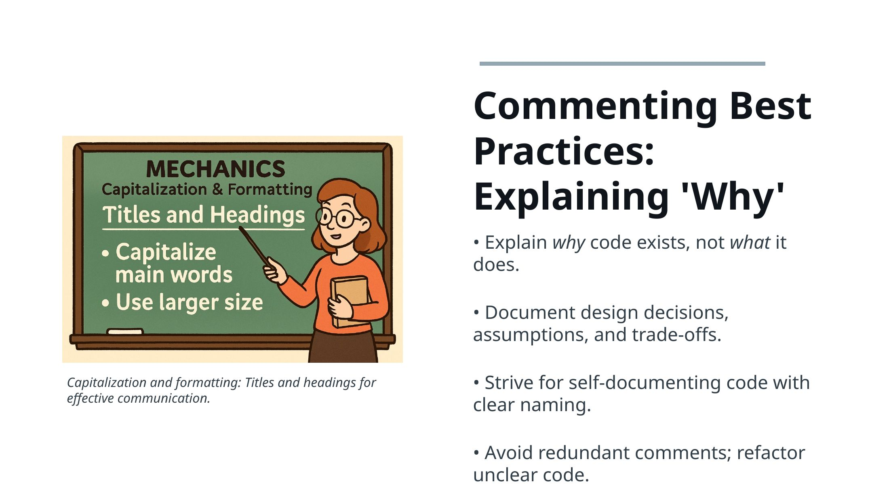
Useful comments explain why a choice exists, including assumptions or trade-offs. Clear names and structure should explain what the code does, avoiding comments that merely repeat it.
Example: Comment that a date range is inclusive because a business rule requires it; a comment saying “add one” above x += 1 adds little.
- Why-focused comments: Comments explaining design decisions, assumptions, and trade-offs rather than merely repeating obvious code.
- Self-documenting code: Code whose meaningful names and clear structure communicate intent and reduce the need for redundant comments.
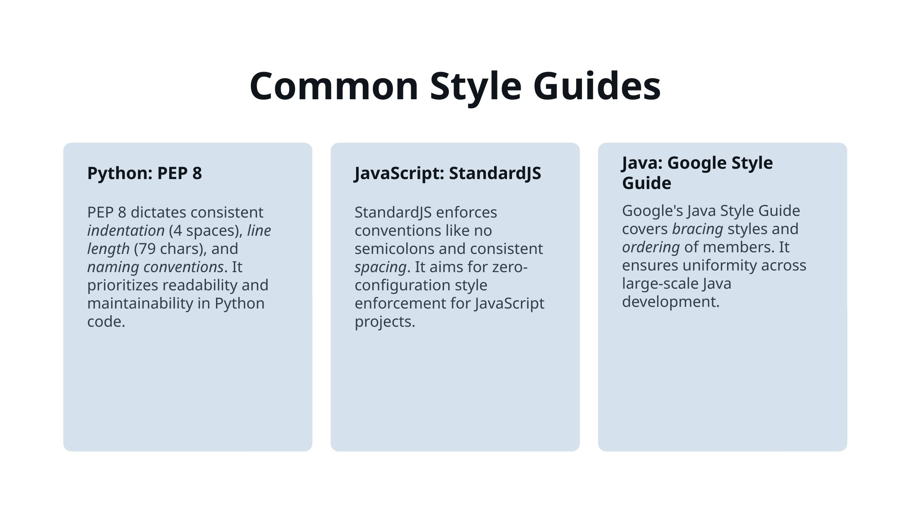
Style guides define conventions for particular languages. PEP 8 serves Python, StandardJS serves JavaScript, and Google Style Guide covers Java; following one keeps a codebase consistent.
Example: A Python project can use PEP 8 so developers agree on indentation and naming.
- PEP 8: A Python style guide emphasizing readability, including four-space indentation and a 79-character code line limit in the slides.
- StandardJS: A JavaScript style convention described in the slides as using consistent spacing and no semicolons.
- Google Java Style Guide: A Java style guide covering conventions such as bracing and member ordering.
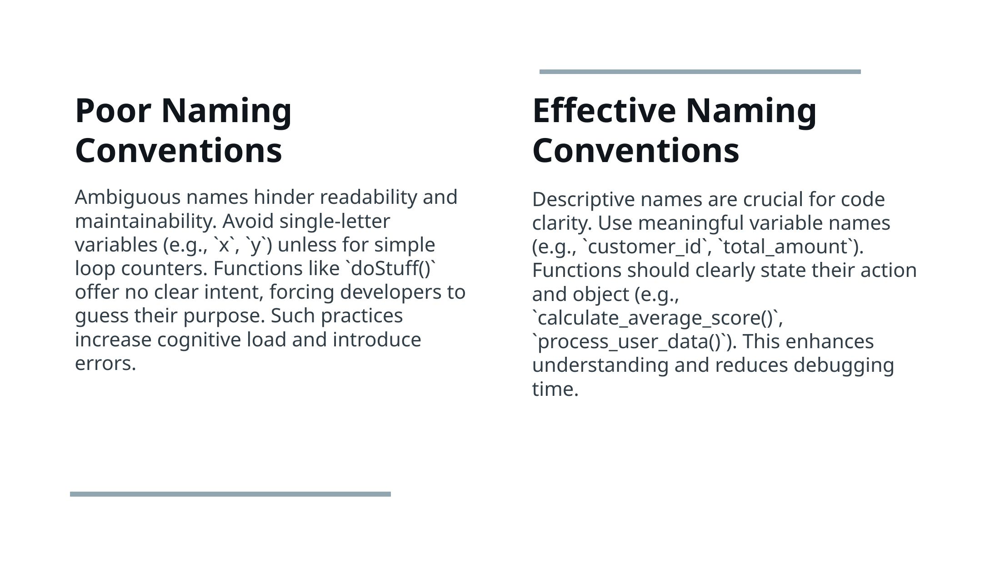
Names should reveal purpose. Vague names force readers to guess and make errors harder to spot; descriptive names lower that mental effort.
Example: customer_id says more than x, and calculate_average_score() describes its action more clearly than doStuff().
- Descriptive naming: Names such as customer_id or calculate_average_score that convey data meaning or a function's action.
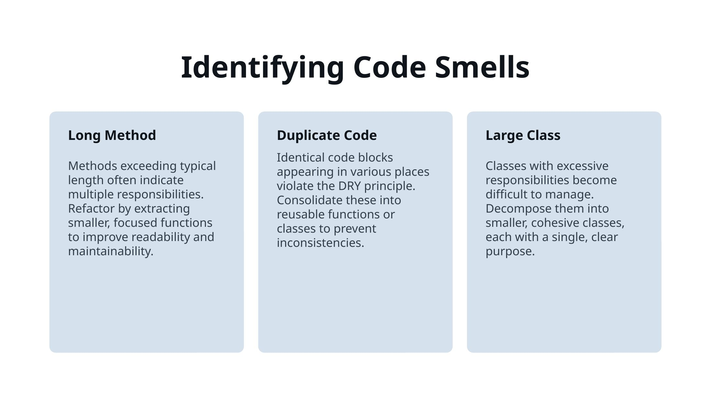
A long method, repeated code, or oversized class can signal that responsibilities are poorly grouped. Refactoring into focused methods or classes can make change safer.
Example: Split a long checkout method into focused steps such as validate cart, calculate total, and submit payment.
- Long method smell: A method with excessive length or responsibilities that may benefit from extraction into smaller focused functions.
- Duplicate code smell: Repeated logic in multiple places that can cause inconsistent changes and should be consolidated where appropriate.
- Large class smell: A class with excessive responsibilities that may need decomposition into smaller cohesive classes.
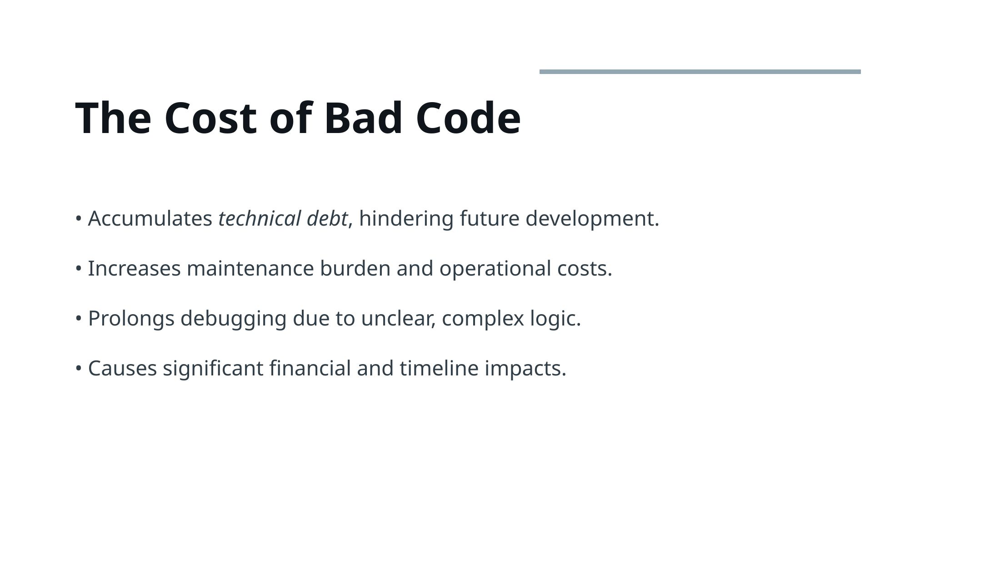
Bad code creates technical debt: future changes become slower and more expensive. Unclear logic adds maintenance and debugging work and can affect cost and schedule.
Example: A quick duplicated workaround may save minutes now but require several fixes later when the rule changes.
- Technical debt: Accumulated code-quality problems that increase future maintenance effort, debugging time, and development costs.
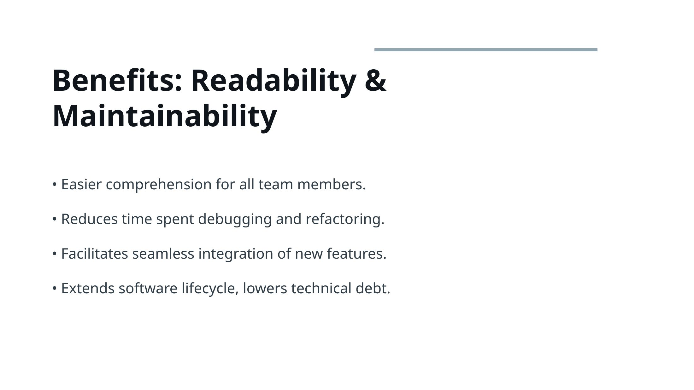
Readable, maintainable code is easier for teammates to understand, debug, and extend. This supports a longer-lived product and can limit accumulated technical debt.
Example: A new feature is easier to add when existing responsibilities are clear and repeated logic is shared.
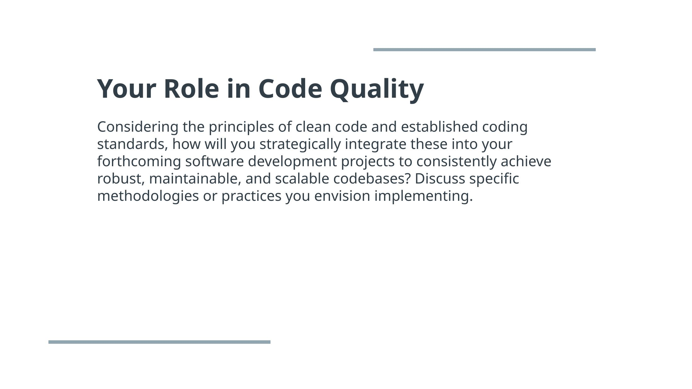
This discussion prompt asks you to apply the lesson: choose concrete practices for keeping future projects robust, readable, and maintainable.
Example: A response could describe adopting a style guide, reviewing code, writing focused tests, and refactoring duplication as it appears.
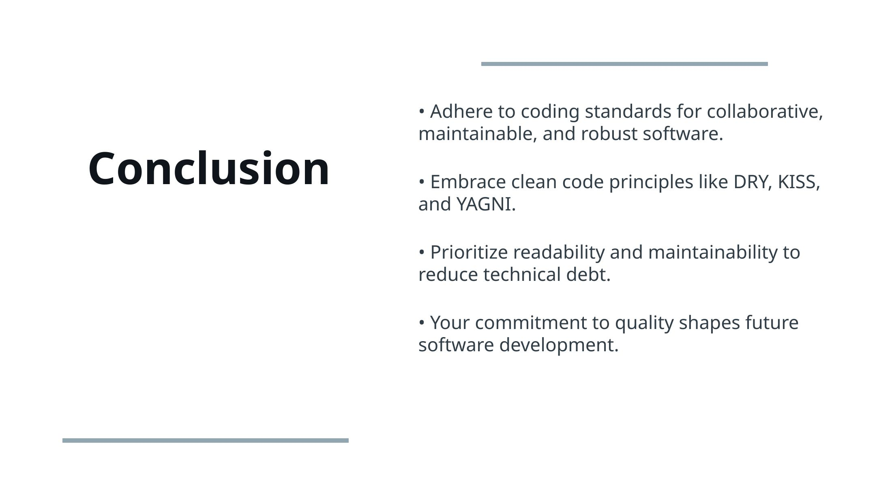
The conclusion asks developers to follow shared standards, use DRY/KISS/YAGNI, and protect readability to reduce technical debt. Code quality depends on everyday choices.
Example: Before finishing a change, check whether its names are clear, logic is repeated, and the solution is more complex than required.
Lesson cheat sheet
Use this as a quick review before your quiz.
| Term or idea | Remember it this way |
|---|---|
| Coding standards | Shared formatting and structure rules that support consistency. |
| Naming styles | PascalCase: MyClass; camelCase: myVariable; snake_case: my_variable. |
| DRY | Avoid duplicating logic; reuse a shared implementation. |
| KISS | Prefer the simplest solution that meets the need. |
| YAGNI | Do not build speculative features before they are needed. |
| Premature optimization | Performance tuning before measuring a real bottleneck. |
| Useful comments | Explain why, assumptions, or trade-offs; avoid restating obvious code. |
| Style guides | PEP 8 for Python; StandardJS for JavaScript; Google Style Guide for Java. |
| Code smells | Long method, duplicate code, or large class may indicate responsibilities to refactor. |
| Technical debt | Future cost and friction caused by shortcuts or hard-to-maintain code. |
The quiz has 19 multiple-choice questions and 7 true-or-false questions. You’ll see the answer and explanation as soon as you choose.
Explanations are study aids based on the provided presentation. Examples are illustrative.